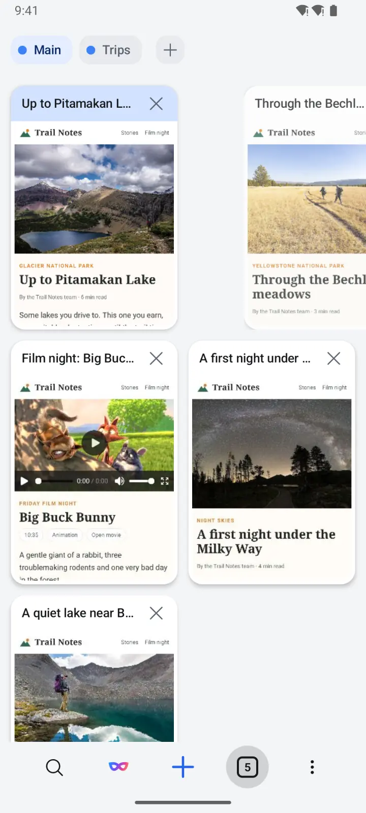
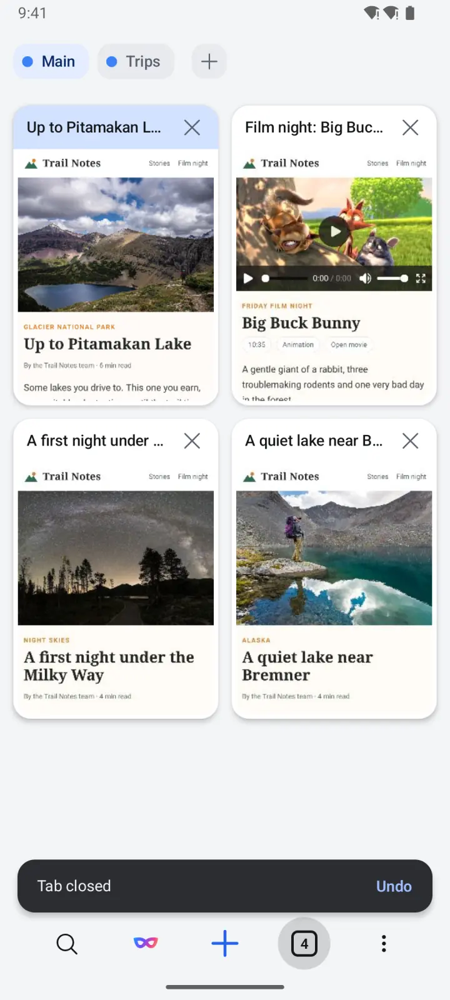
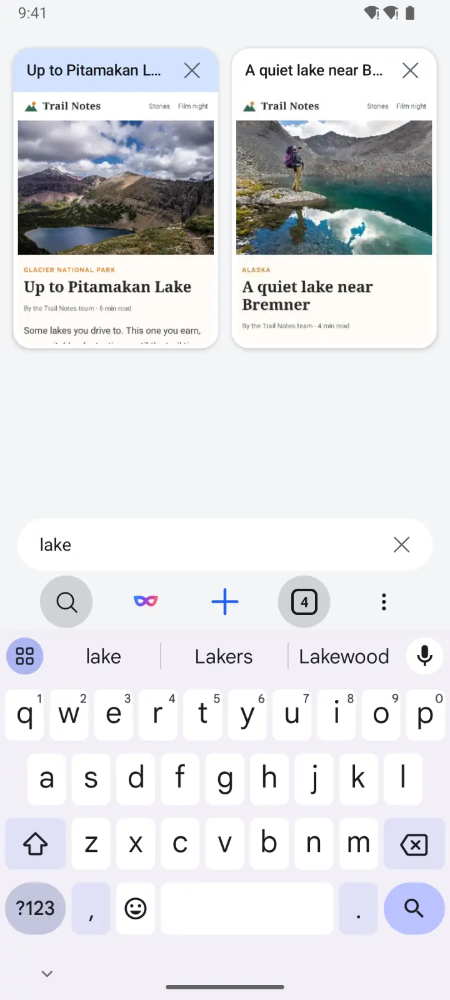
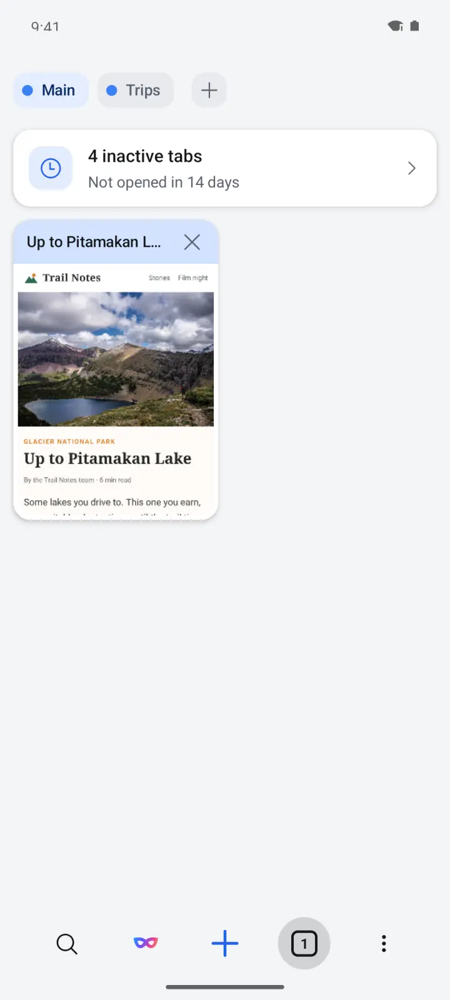
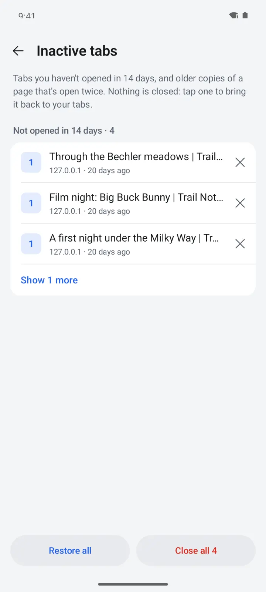
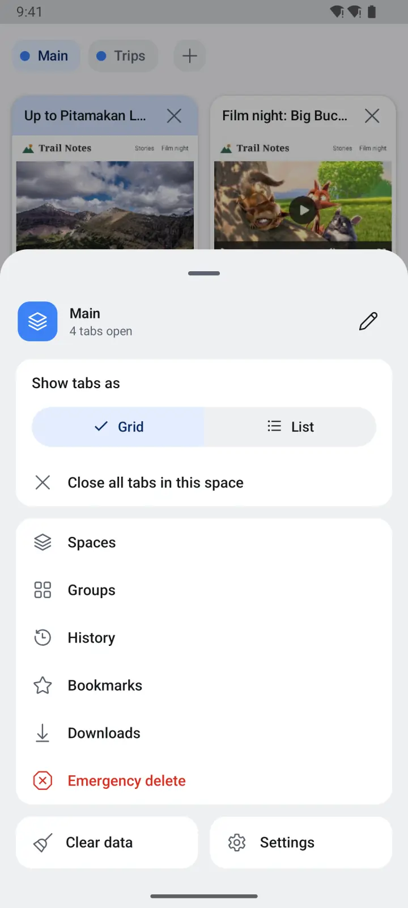
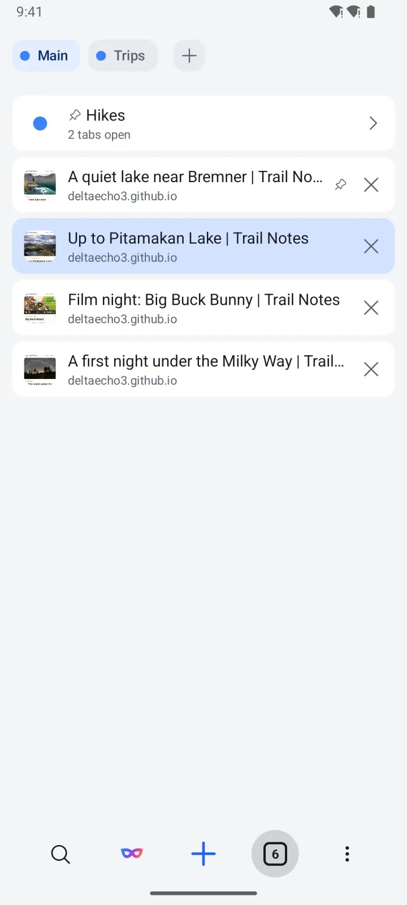

Open, find and close tabs
How-to
Open the Tabs screen to see every page you have open, find one, switch to it or close it.
Open the Tabs screen
Tap the Tabs button on the bar: the square with a number on it, which is how many tabs you have open. The Tabs screen fades in.

You'll see:
- Your spaces as chips along the top, or just above the bar if you put them there (just Main until you make another). See spaces.
- A card for each tab, two across on a phone: a picture of the page, its title and an X. The tab you're on has its title row tinted. A tab still on the start page shows as New tab with the compass. With the phone on its side you get four across, and three on an opened foldable.
- The bar at the bottom: Search your tabs, the mask for private tabs, + for a new tab, Tabs with your count, and the ⋮ menu.
Tap a card to go to that tab.
Open a new tab
Tap + (TalkBack: New tab). The new tab opens at once, on the start page. Hold + to pick New tab or New private tab.
Tapping the mask opens a new private tab. See private tabs.
Close a tab, and get it back
- Tap the X on its card, or swipe the card sideways. Past about a third of its width it slides away and closes; let go sooner and it springs back.
- The cards after it slide into its place.
- A bar says Tab closed with Undo for about three seconds (longer if your phone's accessibility settings ask for more time). Tap Undo and the tab comes back where it was, or swipe the bar away.


To close the tab you're on without opening the Tabs screen, hold the Tabs button on the bar and tap Close tab.
Find a tab
Tap Search your tabs and type. The cards narrow to the tabs whose title, name or address match. The X or Back closes the search.

Inactive tabs
Tabs you haven't opened in 14 days, and the older copy of a page you have open twice in the same space (the exact same address, any part after # included), leave the grid for one card under the spaces: 23 inactive tabs, with why under it (Not opened in 14 days, or open twice). The card shows only when the space you're in has some, and the tab count on the bar leaves them out. Nothing is closed, and a search still finds them. Close all tabs, Close other tabs and Close group leave them too, except an older copy whose newer copy they close: it closes with it, and the same Undo brings both back. Clear browsing data (with its tabs option), clearing or deleting a space, Shred and Delete everything close them with the rest.
Pinned tabs and tabs in a pinned group, the tab you're on, the one the assistant is working in, a tab playing sound or video, locked tabs and private tabs never become inactive.

Tap the card for Inactive tabs: Not opened in 14 days and Open twice lists, each tab with its site and how long ago you used it (a copy says where the newer one is, like Older copy · newer one stays in Main). Each list shows a few tabs first; a button like Show 7 more shows the rest.
- Tap a tab to bring it back: it returns to the grid and opens. A copy you bring back stays in the grid while it shows that page.
- The X closes it, with Undo for a few seconds, as on the Tabs screen.
- Restore all returns every one of them to the grid.
- Close all 23 (with your count) asks first: Keep or Delete. Undo brings them back for a few seconds.

To change after how many days a tab is inactive, or to turn this off, go to Settings > Tabs and History > Inactive tabs. Turned off, every inactive tab comes back to the grid.
The Tabs screen's menu
Tap ⋮ on the Tabs screen's bar:
- At the top, the space you're in, with its color, its sign-ins and how many tabs are open. The pencil opens Edit space.
- Show tabs as: Grid or List. Wayward remembers your choice for each space, and for private tabs.
- Close all tabs (not private) closes your regular tabs but leaves pinned tabs, pinned groups and inactive tabs (but closes an older copy along with its newer one), with Undo. Once you have more than one space it reads Close all tabs in this space.
- Spaces, Groups, History, Bookmarks and Downloads, then Emergency delete in red (see clear data and delete everything).
- Clear data and Settings side by side at the bottom.
If you took Search your tabs or + off the Tabs screen's bar in Settings > Customize, they show at the top of the menu's last card instead.

The list view has a row for each tab, with a small picture, its name and site, its pin and lock marks, and an X.

When you come back
Your regular tabs are still there after you close Wayward and open it again, with their pins, names and groups. Private tabs aren't kept.
More in Browsing
- Search, keep a few tabs open, and find your way home
- Search or go to an address
- Copy, paste or share a page's address
- Scan a QR code
- Change your search engine, and search one site directly
- Pin, rename or pick several tabs
- Group your tabs
- Use the start page
- Find words on a page
- Translate a page
- Read an article without the clutter
- Desktop site, zoom, print and save as PDF
- Hold a link, picture or video for more
- When a page asks you something
- Find a page in your history, or clear it
- Bookmarks, folders, import and export
- Links from other apps, and link previews
- The widget and home-screen shortcuts
- Sign in with your password manager